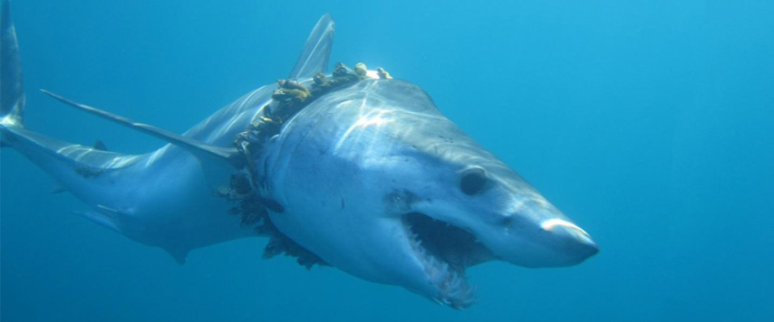
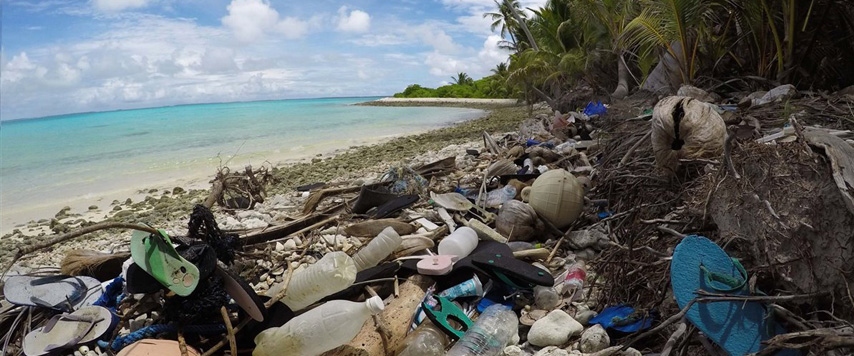
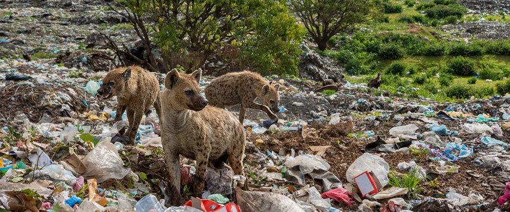
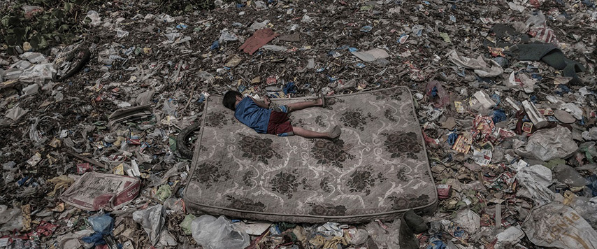
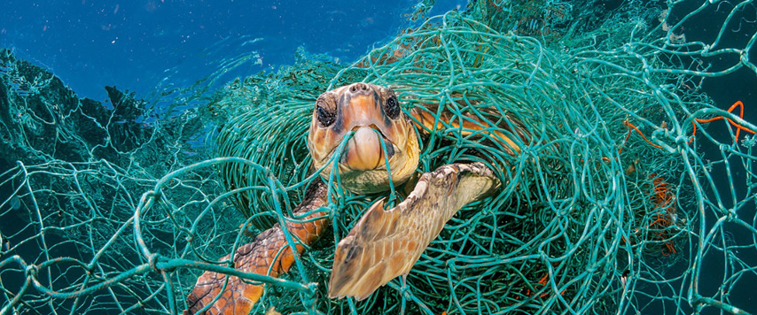
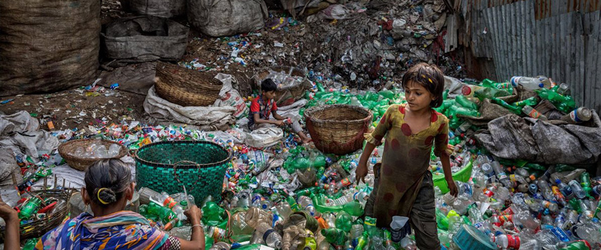

- 
- 
- 
- 
- 
- 
Problematica de la basura
La basura se ha convertido en un problema serio en el mundo de hoy. De acuerdo con un informe publicado en Nature journal, el problema de la basura o los desechos sólidos está asumiendo proporciones terribles en la actualidad. Para fines de este siglo (2100), la basura se recolectará a razón de 11 millones de toneladas por día en todo el mundo, más de tres veces la tasa actual. Implica que la generación de basura que ascendió a 3,5 millones de toneladas por día en 2010 se convertirá en 6 millones de toneladas por día para 2025. En la actualidad, la población de la India produce alrededor de 62 millones de toneladas de residuos sólidos anualmente. Fuera de esto, 45 millones de toneladas de la basura no son tratadas y eliminadas por las agencias cívicas de una manera no científica. Según el informe, la India urbana genera 109.589 toneladas de residuos por día. Curiosamente, los EE. UU. Urbanos producen 624.700 toneladas de basura por día, que es la más alta del mundo, mientras que la segunda más grande es China urbana con 520.548 toneladas por día. La generación de desechos de la India será de más de 376.639 toneladas por día para 2025, especialmente con la población de la India urbana que se espera que aumente a 538 millones.
¿Cual es el problema con la basura?
En la antigüedad, la basura generalmente solo contenía desechos orgánicos que se depositaban en el suelo, pero la proporción de productos químicos en los desechos aumenta con el ritmo acelerado del desarrollo moderno. En países como India, las cosas usadas anteriormente como bolsas no eran dañinas. Anteriormente, la cerámica se usaba para sustancias líquidas, y la bolsa de yute se usaba para transportar mercancías. Ahora, el plástico ha cambiado la situación y ha surgido un problema con ella porque el plástico nunca se degrada. Su reciclaje es posible, pero no existe un sistema adecuado para depositarlo. Las ciudades se están reduciendo a vertederos de basura. La basura está presente en todas partes de una forma u otra, ya sea que haya un pueblo o una ciudad, un templo o una mezquita. Este problema ha ido en aumento desde las últimas tres décadas, lo que ha provocado problemas de salud y degradación del medio ambiente. Hoy somos víctimas de muchos tipos de desechos, incluidos los domésticos, agrícolas e industriales. Cada año se producen toneladas de residuos o basura, y solo el uno por ciento se recicla. El resto se acumula en los campos o en las calles y al final, durante la temporada de lluvias; llega a los océanos a través de los ríos. Hay muchas razones para la producción de basura. Una razón para esto es la creciente urbanización y prosperidad. Cuanto más fuerte financieramente es el país o la ciudad, más basura producirá. También se puede ver al vincular la pobreza y la prosperidad, la competencia y la ineficiencia. Esto significa que cuando la aspiración por los servicios sea alta en las poblaciones, también habrá un aumento en la cantidad de desechos. Hoy, China y la India son los ejemplos destacados de esto en el mundo. Ambos están dando pasos en el desarrollo económico, pero en el proceso, también están produciendo montones de basura.
Libros relacionados
- Expedition 7e Continent: Luchando contra la plastificación de los océanos
- La gestión sostenible de los residuos. Memorias II